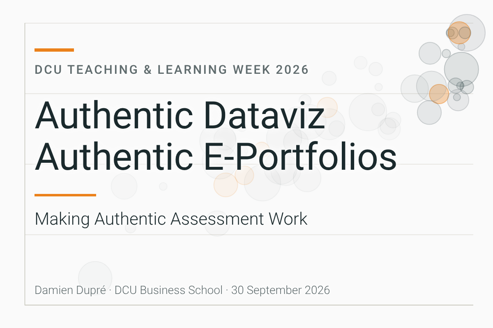

Authentic Dataviz and Authentic E-Portfolios
From Classroom to Competition: Aligning Module Assessment with the European Student Dataviz Challenge
Context. Data Analytics and Storytelling is a core module on MSc in Business Management, Strategic Management, and Global Management programmes at DCU Business School. The pedagogical challenge was twofold. Employers judge analytics graduates on the artefacts they can produce rather than the examinations they have passed, so a conventional assignment written for a single examiner leaves a gap. At the same time, the diversity of the cohort meant the assessment had to be accessible to novices while stretching advanced students. My goal was an assessment that mirrors professional practice (Villarroel et al., 2018) and gives every student an external benchmark.
Action. I redesigned the module assessment around one authentic task, the production of a data visualisation that meets the requirements of the EDHEC Student Dataviz Challenge, a European competition based on real open data. The assignment brief mirrors the competition brief, and I assess students with the same criteria and rubric used by the competition’s independent jury. Each criterion is described at three levels of achievement, so the standard students are working towards is explicit. Following Jonassen’s (1991) argument that learning should be organised around authentic tasks, teaching alternates between taught content and applied exercises, so every student has practised the full workflow before the assessment. Feedback is integrated with feed-forward (Hattie and Timperley, 2007). It justifies the grade and gives concrete guidance for improving the visualisation ahead of an optional competition entry. Students also self-assess against publicly available submissions from previous years.
Result. DCU students have placed in the Top 10 of the challenge in each of the past three years. In 2024, five of the ten finalists were DCU students, including the winner and the runner-up. The external examiner reported in 2023 that the module bridges technical data skills and effective communication strategies. Average marks differed between genders by 1.1% to 1.9% across the 2021 to 2023 academic years, consistent with the intended inclusive design.
Reflection. The clearest lesson for me is that an external standard motivates in a way an internal grade does not. Students work towards a jury, not a marking scheme. What surprised me most is who succeeds. Students without a quantitative background have reached the European Top 10, which suggests that, in this module at least, transparent criteria and worked examples matter more than prior training. Keeping competition entry optional preserved student agency. The assessment prepares everyone, and the public step remains a choice. If I ran the module again, I would introduce the previous years’ submissions even earlier in the semester, since comparing against them is the point where expectations become concrete. To colleagues, I would recommend a simple sequence. Find an external competition, venue, or audience in your discipline, align your brief and rubric with it, and let the graded task become a draft of something real.
References
- Hattie, J. and Timperley, H. (2007) ‘The power of feedback’, Review of Educational Research, 77(1), pp. 81-112.
- Jonassen, D. H. (1991) ‘Objectivism versus constructivism: Do we need a new philosophical paradigm?’, Educational Technology Research and Development, 39(3), pp. 5-14.
- Villarroel, V., Bloxham, S., Bruna, D., Bruna, C. and Herrera-Seda, C. (2018) ‘Authentic assessment: creating a blueprint for course design’, Assessment & Evaluation in Higher Education, 43(5), pp. 840-854.
The E-Portfolio as Authentic Assessment: Building Professional Identity with GitHub and Quarto
Context. E-Portfolios are introduced at DCU Business School in the Undergraduate Data Analytics Specialism and in the Postgraduate Business Analytics Programme. The module addresses a skills gap. Analytics students are expected to show version control, reproducible publishing, and an online presence, yet business curricula rarely teach or assess these competencies. Most assessed work also has one reader and a short life. My goal was an assessment that is a live professional artefact rather than a submission to be graded and forgotten.
Action. The curriculum extends beyond analytics techniques into the infrastructure of professional data work. Students learn version control with Git and GitHub (the standard platform for collaborative data science), reproducible document and website publishing with Quarto, the fundamentals of HTML and CSS, and data management, with Python as the language for applied exercises. The assessment draws these threads together. Each student designs, builds, and publishes a personal portfolio website through GitHub Pages, presenting their analytical projects. To make this workable for novices, I scaffold the technical setup in the opening weeks and provide open-source interactive tutorials that students work through at their own pace. The rubric rewards clarity of communication and coherence of the portfolio narrative alongside technical execution.
Result. Every student leaves with a publicly hosted website they can cite in a CV and continue to develop after graduation. Because the portfolio is public, students write for recruiters and peers rather than solely for an examiner, and in my experience they curate and polish their work differently as a result. Published student projects have led to professional outcomes, including an internship offer that followed a publicly showcased project.
Reflection. Two difficulties recur. Git generates friction in the first weeks, which the early scaffolding now absorbs, and some students prioritise visual decoration over content, which the communication-focused rubric counteracts. What surprised me is how quickly a real audience changes behaviour. Knowing a recruiter might read the page raises the standard students set for themselves more effectively than any marking scheme I could write. If I redesigned the module, I would add peer review of draft portfolios before publication, so students experience being an audience as well as an author. To colleagues in any discipline, I would recommend the underlying move of replacing the essay submitted to one reader with a published artefact addressed to a real audience. Quarto supports many output formats and GitHub Pages hosts sites free of charge, so the approach carries no software or infrastructure cost.